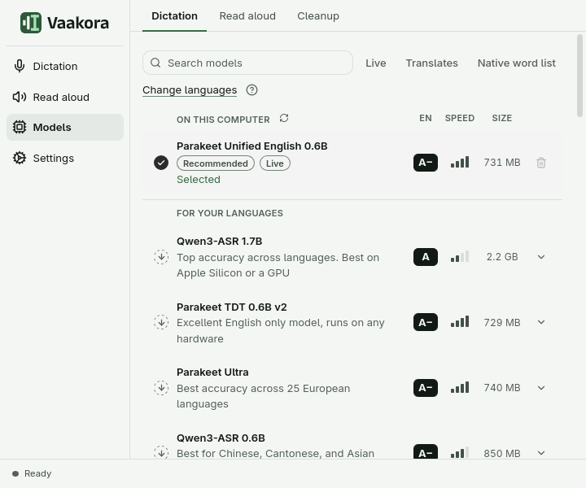

Models
Models has three tabs: Dictation, Read aloud and Cleanup. Download a model, choose it, and see its size and licence. Models are downloaded on demand and run on your own computer.

- Dictation: the speech models, such as Whisper and Parakeet. Search the list, and change the languages it is filtered for.
- Read aloud: the voice models, with the device each runs on. See Read aloud.
- Cleanup: the five local cleanup models. See Cleanup.
- Each model's licence is shown on its card.
- The device ratings were measured on one machine. Other hardware may rank devices differently.